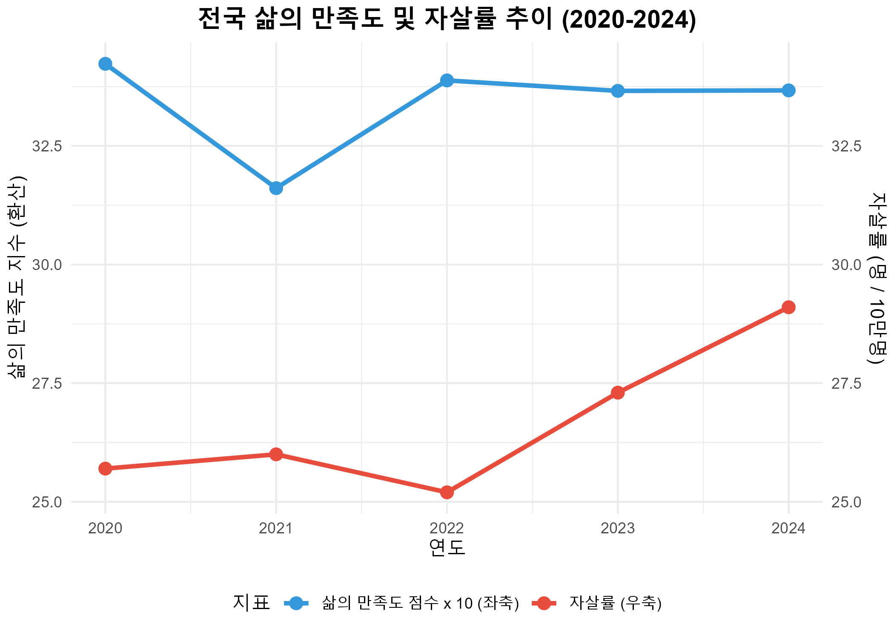
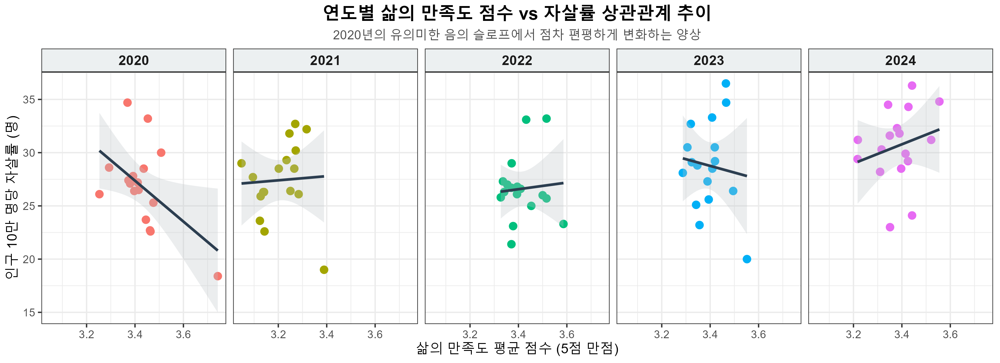
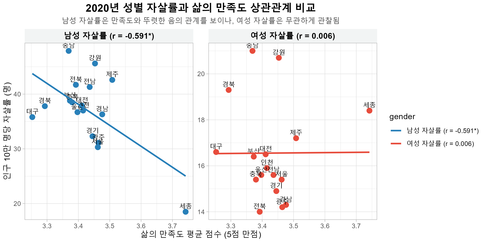
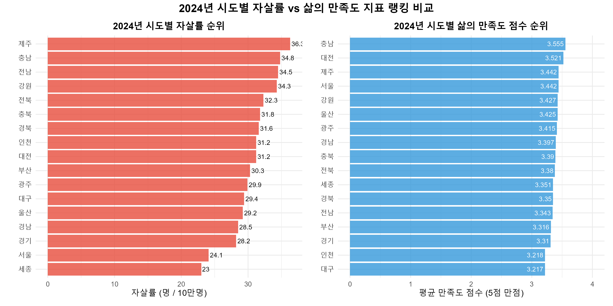
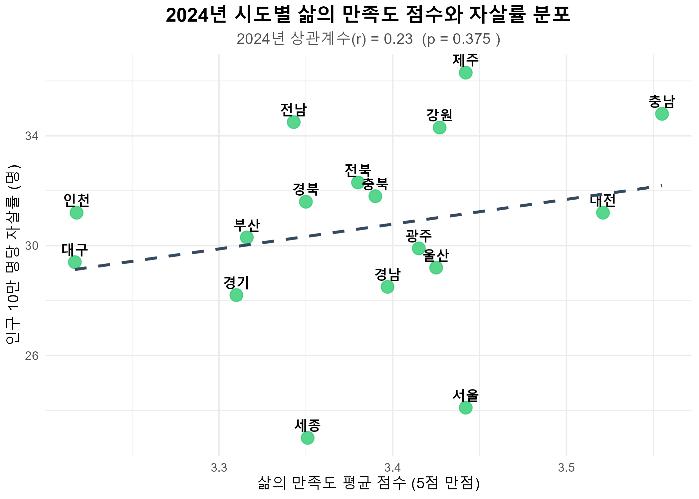

종합 보고서 요약
본 분석은 국가데이터처의 사회조사(삶의 만족도) 데이터와 사망원인통계(인구 십만명당 자살률) 데이터를 결합하여 지난 5년간(2020~2024) 전국 17개 시도별 거시적 웰빙 수준과 극단적 선택 빈도 간의 관계를 분석했습니다.
국가 전체 수준의 시계열 분석에서는 삶의 만족도가 하락할 때 자살률이 상승하고, 만족도가 반등할 때 자살률이 방어되는 뚜렷한 역(Inverse)의 관계가 성립함을 확인했습니다.
• 전국 단위 역관계 증명: 2020년에서 2022년 사이 전국적인 평균 만족도 증감에 따라 자살률이 반비례적으로 반응했습니다.
• 2020년 횡단면 상관성 유의: 2020년 17개 시도별 횡단면 데이터에서는 만족도가 높은 지역일수록 자살률이 뚜렷하게 낮은 통계적 음의 상관관계(r = -0.514, p < 0.05)가 입증되었습니다.
• 지역적 역설(Regional Paradox)의 출현: 2021년 이후 횡단면 상관관계는 0에 수렴했으며, 특히 2024년 기준 최고 만족도 지역(충남)이 자살률 상위 2위를 차지하는 역설적 불일치가 관찰되었습니다.
전국 단위 시계열 추이 분석
국가 전체 평균 지표를 연도별로 매칭한 결과, 삶의 만족도와 자살률 간의 밀접한 관계성이 나타납니다.
2020년에서 코로나19 장기화 시점인 2021년으로 이행하며 삶의 만족도가 급감(만족율 42.7% → 34.0%)했을 때 자살률은 25.7명에서 26.0명으로 증가했으며, 2022년 일상 회복으로 삶의 만족도가 반등(만족율 43.3%)했을 때는 자살률이 25.2명으로 소폭 완화되었습니다.
그러나 2022년 이후부터는 자살률이 급격한 우상향 곡선을 그리며 2024년 29.1명에 도달하여, 만족도 지표 정체(3.36점대) 속에서도 자살률만 급등하는 경향을 나타내고 있습니다.

시도별 피어슨 상관관계 검정
전체 5개년 누적 시도 데이터(N = 85)를 통합한 피어슨 상관계수는 r = -0.048 (p = 0.665)로 유의미한 관계를 찾을 수 없었습니다. 하지만 이를 연도별로 분류하면 매우 중요한 시사점이 관찰됩니다.

위 그래프에서 알 수 있듯이, 2020년에는 뚜렷한 우하향 회귀 슬로프(r = -0.514, p = 0.035*)를 보이며 만족도와 자살률의 음의 인과성이 유효했으나, 2021년 이후 슬로프가 편평해지며 지역별 변동성과의 매칭이 약해졌습니다.
성별 상관성 격차 분석
지표 상관성이 가장 뚜렷하게 발현되었던 2020년 데이터의 성별 집계 결과, 지역 만족도에 민감하게 반응한 것은 남성 집단인 것으로 파악되었습니다.
2020년 남성 자살률과 지역 평균 만족도 점수의 상관계수는 r = -0.591 (p = 0.012*)로 강한 음의 상관성을 보인 반면, 여성 자살률과의 상관계수는 r = 0.006 (p = 0.982)으로 전혀 무관했습니다.
이는 지역 사회의 주관적 정서 안정 및 사회경제적 위기가 남성의 극단적 선택 위험과 밀접히 얽혀 있음을 암시하며, 타겟팅된 방지 정책 수립의 당위성을 제시합니다.

2024년 지역적 역설 (Regional Paradox)
2024년 데이터 분석 결과는 주관적 행복 조사 결과(만족도)와 실제 최악의 정신보건 재난 지표(자살률)가 극단적으로 불일치할 수 있음을 증명합니다.

• 충청남도: 주관적 만족도 평가 전국 1위(3.555점)이나, 자살률은 전국 2위(34.8명)를 기록했습니다.
• 제주특별자치도: 만족도 공동 3위(3.442점)로 상위권이나, 자살률은 전국 1위(36.3명)로 가장 높게 측정되었습니다.
• 대구/경기: 대구는 만족도 최하위(3.217점)이나 자살률은 전국 평균 수준으로 제어되며, 경기도 역시 만족도 하위 3위이지만 자살률도 하위 3위 수준으로 양호하게 방어되고 있습니다.

인터랙티브 데이터 익스플로러
분석에 사용된 통합 데이터를 탐색하고 필터링할 수 있습니다. 각 열의 이름을 클릭하면 해당 열을 기준으로 정렬됩니다.
| 지역 | 연도 | 만족율 (%) | 불만족율 (%) | 평균 점수 | 전체 자살률 | 남성 자살률 | 여성 자살률 |
|---|